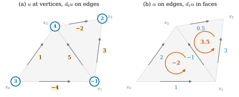
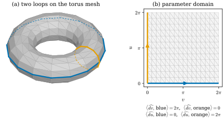

36.4 The Discrete Exterior Derivative
Goals
- Stokes's theorem을 정의로 삼아 discrete exterior derivative \(d_0, d_1\)을 세우고, 손으로와 행렬로 계산할 수 있다.
- discrete Stokes's theorem과 \(R\circ d = d\circ R\)(de Rham map과의 교환)을 증명할 수 있다.
- \(d_1d_0 = 0\)을 증명하고, discrete closed form과 exact form을 구별하며, closed이지만 exact가 아닌 1-form을 torus mesh에서 만들 수 있다.
- \(d_0, d_1\)의 rank로 구멍의 수(first Betti number)를 계산할 수 있다.
Prerequisites
- Theorem 36.2.8: \(\partial\partial = 0\), Proposition 36.2.9: \(\partial\)의 행렬, Definition 36.2.14: coboundary operator
- Theorem 36.3.10, Proposition 36.3.12: \(R\circ W = \id\), \(W\circ d = d\circ W\)
- Proposition 35.4.6, Corollary 35.4.11: edge와 triangle 위의 Stokes's theorem
- Definition 33.5.6, Example 33.5.7, Proposition 33.5.8, Proposition 33.5.9: signed incidence matrix
Motivation
Section 36.3은 discrete form을 Whitney form으로 interpolate하고 다시 측정하면 원래 수가 돌아온다는 것을 보였다. 이제 discrete form을 “미분”하고 싶다. mesh에는 점마다의 미분이 없지만, 두 가지 길이 같은 답을 준다.
첫째 길은 Stokes's theorem이다. smooth form이라면 triangle 위의 \(\int_fd\alpha\)는 세 edge 위의 적분의 합이다((35.4.4)). edge 위의 적분은 discrete 1-form에 이미 저장되어 있으므로, 그 합을 \(d\alpha\)의 face 값으로 정의하면 된다(Section 35.4의 Smooth vs. Discrete 상자). 둘째 길은 interpolation이다. discrete form을 form으로 바꾸고(\(W\)), smooth한 \(d\)를 취하고, 다시 측정한다(\(R\)). Proposition 36.3.12와 Theorem 36.3.10에 의해 \(R\,d\,W\alpha = R\,W\,d_k\alpha = d_k\alpha\)이다. 두 길 모두 Definition 36.2.14의 coboundary operator \(d_k\)에 도착한다. 그것을 discrete exterior derivative라 부르는 것이 이 절의 출발점이다.
Definition
Definition 36.4.1 (discrete exterior derivative). oriented simplicial complex 위의 discrete \(k\)-form \(\alpha \in \R^{n_k}\)에 대하여, Definition 36.2.14의 coboundary \(d_k\alpha \in \R^{n_{k+1}}\), 곧 oriented \((k+1)\)-simplex \(\sigma\)마다 \((d_k\alpha)_\sigma = \langle\alpha, \partial\sigma\rangle\)인 discrete \((k+1)\)-form을 \(\alpha\)의 discrete exterior derivative(이산 외미분)라 한다. 2-complex에서는 다음 두 식이다.
둘째 식에서 저장된 orientation과 반대인 edge의 값은 \(\alpha_{[b,a]} = -\alpha_{[a,b]}\)로 읽는다.
말로 하면 이렇다. 0-form의 \(d\)는 edge의 끝 값 빼기 시작 값이다. 1-form의 \(d\)는 face의 둘레를 face의 orientation 방향으로 한 바퀴 돌며 edge 값을 더한 것, 곧 face를 도는 circulation이다. 길이도 넓이도 쓰지 않는다.
Example 36.4.2 (two triangles by hand).
vertex \(x_0 = (0, 0)\), \(x_1 = (2, 0)\), \(x_2 = (1, 1.4)\), \(x_3 = (2.2, 1.6)\)와 반시계 방향 face \(f = (0, 1, 2)\), \(g = (1, 3, 2)\)로 된 mesh(lib/ch36.kite)를 보자. edge는 \(01, 02, 12, 13, 23\)의 순서다. 0-form \(u = (3, -1, 4, 2)\)이면 (36.4.1)에서
\[ \begin{aligned} d_0u &= (u_1 - u_0,\ u_2 - u_0,\ u_2 - u_1,\ u_3 - u_1,\ u_3 - u_2) \\ &= (-4,\ 1,\ 5,\ 3,\ -2) \end{aligned} \]
이다. 1-form \(\alpha = (1, 2, -1, 3, 0.5)\)이면 \(f\)의 둘레는 \(0 \to 1 \to 2 \to 0\)이므로 \((d_1\alpha)_f\) \(= \alpha_{01} + \alpha_{12} - \alpha_{02}\) \(= 1 - 1 - 2\) \(= -2\)이고, \(g\)의 둘레는 \(1 \to 3 \to 2 \to 1\)이므로 \((d_1\alpha)_g\) \(= \alpha_{13} - \alpha_{23} - \alpha_{12}\) \(= 3 - 0.5 + 1\) \(= 3.5\)이다. 행렬로는
\[ d_0 = \begin{pmatrix} -1 & 1 & 0 & 0 \\ -1 & 0 & 1 & 0 \\ 0 & -1 & 1 & 0 \\ 0 & -1 & 0 & 1 \\ 0 & 0 & -1 & 1 \end{pmatrix}, \]
\[ d_1 = \begin{pmatrix} 1 & -1 & 1 & 0 & 0 \\ 0 & 0 & -1 & 1 & -1 \end{pmatrix} \]
이고, \(d_1(d_0u)\) \(= (-4 - 1 + 5,\ -5 + 3 + 2)\) \(= (0, 0)\)이다.
Verification: verify/v-36-4-discrete-exterior-derivative.py

Figure 36.4.1의 (b)에서 가운데 대각선을 보자. 저장된 방향은 \(x_1 \to x_2\)(회색 화살표)이고 값은 \(-1\)이다. 왼쪽 face \(f\)의 원호는 반시계 방향이라 이 edge를 \(x_1 \to x_2\)로 지나므로 \(-1\)을 그대로 더하고, 오른쪽 face \(g\)는 같은 edge를 \(x_2 \to x_1\)로 지나므로 \(+1\)을 더한다. 공유 edge가 두 face에 반대 부호로 들어가는 것, 이것이 다음에 나오는 Stokes's theorem과 \(d_1d_0 = 0\)의 핵심이다.
Non-example 36.4.3 (difference quotients). edge마다 차분 몫 \(q_{[i,j]} := (u_j - u_i)/\abs{x_j - x_i}\)를 두는 것은 discrete exterior derivative가 아니다. 이것은 gradient의 edge 방향 성분의 근사(밀도)이지 적분한 양이 아니다. 그래서 길이에 의존하고, 닫힌 loop을 따라 더해도 \(0\)이 아니다. Example 36.4.2의 \(u\)에서 \(f\)의 둘레를 따라 \(q\)를 더하면 \(-4/2 + 5/\abs{x_2 - x_1} - 1/\abs{x_2 - x_0}\) \(= -2 + 2.906 - 0.581\) \(= 0.325 \neq 0\)이다. \(d_0u\)는 \(-4 + 5 - 1 = 0\)이다.
Verification: verify/v-36-4-discrete-exterior-derivative.py
Proposition 36.4.4 (the matrices of d).
(a) face list의 orientation과 번호(§2.5)에서 \(d_0 = A_0^{\pm} = \partial_1^{\mathsf T}\), \(d_1 = A_1^{\pm} = \partial_2^{\mathsf T}\)이다. 이것이 dgdec.d0, dgdec.d1이다. (b) \(k\)-simplex들의 orientation 선택을 대각 부호 행렬 \(P_k\)로 바꾸면 \(d_k\)는 \(P_{k+1}d_kP_k\)가 되고 de Rham map은 \(P_kR_k\)가 된다. 따라서 \(d_kR_k\)와 \(R_{k+1}d\)는 같은 방식으로 \(P_{k+1}\)배가 되어, 둘 사이의 관계는 orientation의 선택에 무관하다.
Proof. (a) \(d_k\)의 행렬은 \(\partial_{k+1}\)의 행렬의 transpose이고(Definition 36.2.14), 그것은 Proposition 36.2.9에 의해 \(A_k^{\pm}\)이다. (b) \(d_k\)의 성분 \((d_k)_{\sigma\tau} = o(\sigma, \tau)\)는 \(\sigma\)나 \(\tau\)의 orientation을 뒤집으면 부호가 바뀐다(Proposition 33.5.8). de Rham map은 Proposition 36.1.4(c)이다. \(P_k^2 = I\)이므로 \((P_{k+1}d_kP_k)(P_kR_k) = P_{k+1}d_kR_k\)이고, \(R_{k+1}\)도 \(P_{k+1}R_{k+1}\)이 된다.
tetrahedron의 boundary에서 \(d_0 = A_0^{\pm}\)(\(6\times 4\))와 \(d_1 = A_1^{\pm}\)(\(4\times 6\))는 Example 33.5.7에서 이미 손으로 썼다. 다시 계산하지 않고, 그 행렬에서 \(d_1d_0 = 0\)과 \(\mathbf{1}^{\mathsf T}d_1 = 0\)을 확인하는 것은 Exercise 36.4.2에 남긴다.
Discrete Stokes's Theorem
Theorem 36.4.5 (discrete Stokes's theorem). 모든 discrete \(k\)-form \(\alpha\)와 \((k+1)\)-chain \(c\)에 대하여
이다.
Proof. (36.2.4) 그대로다. \(d_k\)는 \(\partial_{k+1}\)의 dual map으로 정의되었다.
smooth Stokes's theorem \(\int_Md\alpha = \int_{\partial M}\alpha\)에서 영역 \(M\)을 chain \(c\)로, 적분을 pairing으로 바꾼 식이다((36.2.3)). smooth 쪽에서는 미적분학의 기본정리와 Fubini가 필요했지만 discrete 쪽에서는 정의에서 바로 나온다. 정의 자체가 Stokes's theorem을 옮긴 것이기 때문이다.
Corollary 36.4.6 (sums of derivatives). (a) vertex \(a\)에서 \(b\)로 가는 path(1-chain \(c\), \(\partial c = [b] - [a]\))를 따라 \(d_0u\)를 더하면 \(u_b - u_a\)이고, 닫힌 loop을 따라 더하면 \(0\)이다. (b) 2-chain \(b\) 위의 \(d_1\alpha\)의 합은 \(\partial b\)를 도는 \(\alpha\)의 circulation이다. (c) boundary가 없고 consistently oriented인 surface에서는 모든 \(\alpha\)에 대해 \(\sum_f(d_1\alpha)_f = 0\), 곧 \(\mathbf{1}^{\mathsf T}d_1 = 0\)이다.
Proof. (a), (b)는 (36.4.2)에 \(c\)와 \(b\)를 넣은 것이다. (c)는 \(\sum_ff\)가 2-cycle이라는 것(Exercise 36.2.4, Proposition 33.5.9)에 (b)를 쓴 것이다.
예를 들어 Example 36.1.2의 grid에서 \(\widehat{x\,dy}\)의 \(d_1\)은 모든 face에서 \(\tfrac18\)이다(Example 36.1.2(d)와 아래 Theorem 36.4.7). 8개를 더한 \(1\)은 정사각형 둘레를 반시계 방향으로 도는 \(x\,dy\)의 circulation(아래 \(0\), 오른쪽 \(1\), 위 \(0\), 왼쪽 \(0\))과 같다. Exercise 36.1.5에서 icosphere 위의 \(\widehat{dx\wedge dy}\)를 모두 더한 것이 \(0\)이었던 것은 (c)다(\(dx\wedge dy = d(x\,dy)\)이므로 아래 정리로 \(\widehat{dx\wedge dy} = d_1\widehat{x\,dy}\)).
d Commutes with Discretization
Theorem 36.4.7 (the de Rham map commutes with d). \(\mathcal{K}\)가 \(\R^N\) 안의 2-complex이고 \(U \supseteq \abs{\mathcal{K}}\)가 open set이라 하자. \(U\) 위의 \(C^1\) 함수 \(f\)와 \(C^1\) 1-form \(\alpha\)에 대하여
이다. 곧 다음 그림이 가환한다.
\[ \begin{CD} \Omega^0(U) @>d>> \Omega^1(U) @>d>> \Omega^2(U) \\ @VR_0VV @VR_1VV @VVR_2V \\ \R^{n_0} @>d_0>> \R^{n_1} @>d_1>> \R^{n_2} \end{CD} \]
이 정리가 말하는 것. “먼저 미분하고 적분한 것”과 “먼저 적분하고 \(d_k\)를 곱한 것”이 근사가 아니라 정확히 같다. mesh가 거칠어도 그렇다. 이 정확성이 DEC에서 \(d\)를 믿을 수 있는 이유다. 근사는 다음 절의 Hodge star에서만 들어온다.
Proof. edge \([i, j]\)에서 Proposition 35.4.6은 \(R_1(df)_{[i,j]}\) \(= \int_{[x_i,x_j]}df\) \(= f(x_j) - f(x_i)\) \(= (d_0R_0f)_{[i,j]}\)를 준다. face \([x_0, x_1, x_2]\)(\(F\)의 행 순서)에서 Corollary 35.4.11, (35.4.4)는 \(\R^N\)의 triangle에서
\[ R_2(d\alpha)_{[x_0,x_1,x_2]} = \int_{[x_0,x_1]}\alpha + \int_{[x_1,x_2]}\alpha + \int_{[x_2,x_0]}\alpha \]
를 준다. 오른쪽의 각 항은 저장된 orientation의 edge 값 \((R_1\alpha)_e\)이거나, edge의 저장된 orientation이 반대이면 그 \(-1\)배다(Proposition 36.1.4(b)). 이것은 (36.4.1)의 \((d_1R_1\alpha)_{[x_0,x_1,x_2]}\)와 같다.
d∘d = 0, Closed and Exact Forms
Theorem 36.4.8 (d∘d = 0). 모든 oriented simplicial complex에서 \(d_{k+1}d_k = 0\)이다. 특히 2-complex에서 \(d_1d_0 = 0\)이다.
Proof. \(\langle d_{k+1}d_k\alpha, c\rangle = \langle d_k\alpha, \partial c\rangle = \langle\alpha, \partial\partial c\rangle = 0\)이다. 두 등호는 (36.4.2)이고 마지막은 Theorem 36.2.8이다. 모든 chain \(c\)에서 \(0\)이므로 \(d_{k+1}d_k\alpha = 0\)이다. 행렬로는 \(d_1d_0 = \partial_2^{\mathsf T}\partial_1^{\mathsf T} = (\partial_1\partial_2)^{\mathsf T} = 0\)이다. 2-complex에서는 직접도 보인다: \((d_1d_0u)_{[i,j,k]}\) \(= (u_j - u_i) + (u_k - u_j) + (u_i - u_k)\) \(= 0\).
smooth한 \(dd = 0\)(Theorem 35.2.4)은 편미분의 대칭에서 나왔다. discrete한 \(dd = 0\)은 boundary의 boundary가 \(0\)이라는 조합적 사실의 transpose다. Chapter 35의 Derivation(Section 35.4)이 smooth 쪽에서 본 연결이 discrete 쪽에서는 행렬 등식 하나다. dgmesh.icosphere(2)(vertex 162, edge 480, face 320)에서 \(d_1d_0\)은 \(320\times 162\) 영행렬이다(아래 Implementation).
Definition 36.4.9 (discrete closed and exact forms). 2-complex 위의 discrete 1-form \(\alpha\)가 \(d_1\alpha = 0\)이면 \(\alpha\)를 discrete closed form(이산 닫힌 형식)이라 한다.
어떤 \(u \in \R^{n_0}\)에 대해 \(\alpha = d_0u\)이면 \(\alpha\)를 discrete exact form(이산 완전 형식)이라 한다.
Theorem 36.4.8에 의해 exact이면 closed이다: \(\im d_0 \subseteq \ker d_1\). 거꾸로가 성립하는지가 smooth의 closed form과 exact form(Proposition 35.2.11, Chapter 19)에서와 같은 질문이고, 답도 같은 곳, 곧 구멍에 달려 있다.
Example 36.4.10 (on the planar grid). (a) \(f = x^2 - y^2\)의 \(\widehat{df}\)는 Theorem 36.4.7에 의해 \(d_0\hat f\)이므로 exact이고, 따라서 closed다. (b) \(\widehat{x\,dy}\)는 closed가 아니다. \(d_1\widehat{x\,dy} = \widehat{dx\wedge dy}\)이고 이것은 face 넓이의 vector다. (c) \(R_1(d\theta)\)(\(d\theta = (-y\,dx + x\,dy)/(x^2 + y^2)\))는 원점을 품지 않는 grid에서 closed다(\(d_1R_1(d\theta) = R_2(d\,d\theta) = 0\)). 아래 Proposition 36.4.12에 의해 grid 위에서는 exact이기도 하다. 원점을 둘러싼 annulus mesh에서는 exact가 아니다(Example 36.2.15).
Verification: verify/v-36-4-discrete-exterior-derivative.py
Non-example 36.4.11. closed form의 정의에서 \(d_1\)을 부호 없는 incidence matrix \(A_1\)로 바꾸면(Non-example 36.2.7) exact form이 closed가 아니게 된다. Example 36.4.2의 \(d_0u = (-4, 1, 5, 3, -2)\)에 \(A_1\)을 곱하면 \(f\)에서 \(-4 + 1 + 5 = 2\), \(g\)에서 \(5 + 3 - 2 = 6\)이다. closed라는 성질은 둘레를 한 방향으로 도는 합에서만 의미가 있다.
Counting Holes with Ranks
closed이지만 exact가 아닌 form이 얼마나 있는지는 vector space \(\ker d_1/\im d_0\)의 dimension이 센다. 그 dimension을 rank로 계산하려면 두 kernel을 알아야 한다.
Lemma 36.4.12 (the kernels of d0 and of d1 transposed). \(\mathcal{K}\)가 face list의 pure 2-complex라 하자. (a) vertex와 edge가 이루는 graph가 connected이면 \(\ker d_0 = \Span\{\mathbf{1}\}\)이다. (b) 모든 edge가 triangle 둘 이하에 속하고, triangle들이 consistently oriented(Definition 33.3.13)이며 edge를 공유하는 사슬로 모두 이어진다고 하자. triangle이 하나뿐인 edge가 있으면 \(\ker d_1^{\mathsf T} = 0\)이고, 모든 edge가 triangle 둘에 속하면 \(\ker d_1^{\mathsf T} = \Span\{\mathbf{1}\}\)이다.
Proof. (a) \(d_0u = 0\)이면 모든 edge \([i, j]\)에서 \(u_i = u_j\)이고, graph가 connected이므로 \(u\)는 상수다. 상수는 \(d_0\mathbf{1} = 0\)이다. (b) \(b \in \R^{n_2}\)가 \(d_1^{\mathsf T}b = \partial_2b = 0\)이라 하자. edge \(e\)의 성분은 \(\sum_{f \ni e}o(f, e)\,b_f = 0\)이다. triangle 둘 \(f, g\)가 \(e\)를 공유하면 consistency에 의해 \(o(f, e) = -o(g, e)\)이므로 \(b_f = b_g\)이다(Proposition 33.5.9). triangle들이 edge 공유로 이어지므로 모든 \(b_f\)가 같은 값 \(\beta\)다. triangle이 하나뿐인 edge가 있으면 그 성분이 \(\pm\beta = 0\)이므로 \(b = 0\)이다. 그런 edge가 없으면 모든 성분이 \(\beta(o(f,e) + o(g,e)) = 0\)이므로 \(b = \beta\mathbf{1}\)이 모두 kernel에 있다.
Proposition 36.4.13 (closed modulo exact). Lemma 36.4.12의 가정(graph의 connectedness와 (b)의 가정)에서 \(\chi = n_0 - n_1 + n_2\)라 하면
이다. 위의 경우는 triangle이 하나뿐인 edge가 있을 때(boundary), 아래는 모든 edge가 triangle 둘에 속할 때(closed)다. 특히 boundary가 있고 \(\chi = 1\)인 mesh(예: 평면 grid)에서는 모든 discrete closed 1-form이 exact다.
Proof. \(\im d_0 \subseteq \ker d_1\)이므로 몫의 dimension은 \(\dim\ker d_1 - \dim\im d_0\) \(= (n_1 - \rank d_1) - \rank d_0\)이다(rank–nullity). Lemma 36.4.12(a)에서 \(\rank d_0 = n_0 - 1\)이고, (b)에서 \(\rank d_1 = \rank d_1^{\mathsf T} = n_2 - \dim\ker d_1^{\mathsf T}\)는 \(n_2\) 또는 \(n_2 - 1\)이다. 넣으면 \(n_1 - n_0 + 1 - n_2\) 또는 \(n_1 - n_0 + 2 - n_2\)이다. \(n\times n\)칸 grid는 \(n_0 = (n+1)^2\), \(n_1 = 3n^2 + 2n\)(가로 \(n(n+1)\), 세로 \(n(n+1)\), 대각선 \(n^2\)), \(n_2 = 2n^2\)이므로 \(\chi = 1\)이다.
이 수가 discrete cohomology의 dimension, 곧 구멍의 수다. boundary가 없는 connected oriented surface에서 \(2 - \chi\)는 genus \(g\)의 두 배다((33.4.1)의 \(\chi = 2 - 2g\)). icosphere(\(\chi = 2\))에서는 \(0\)이고, torus(\(\chi = 0\))에서는 \(2\)다. 다음 예가 torus의 두 방향을 구체적인 form으로 보여 준다.
Example 36.4.14 (closed but not exact on the torus).
dgmesh.torus_mesh(2, 0.8, 12, 16), 곧 \(T_{2,0.8}\)을 tube 둘레(각 \(u\)) 12개, \(z\)축 둘레(각 \(v\)) 16개의 vertex로 나눈 mesh를 보자(vertex \(16i + j\)가 \(u = 2\pi i/12\), \(v = 2\pi j/16\)에 있다). \(z\)축 밖에서 smooth한 1-form \(dv = (x\,dy - y\,dx)/(x^2 + y^2)\)은 closed다(Proposition 35.2.11의 계산에 \(z\)가 끼어들지 않는다). 따라서 \(\alpha = R_1(dv)\)는 Theorem 36.4.7에 의해 \(d_1\alpha = R_2(d\,dv) = 0\), 곧 closed다. \(z\)축을 한 바퀴 도는 loop \(c\)(\(i = 0\)인 바깥 적도, edge 16개)에서는 각 edge가 \(z\)축에서 보아 \(2\pi/16\)의 각을 이루므로 \(\langle\alpha, c\rangle = 2\pi\)이다. 만약 \(\alpha = d_0u\)라면 (36.4.2)와 \(\partial c = 0\)에서 \(\langle\alpha, c\rangle = \langle u, \partial c\rangle = 0\)이어야 한다. 따라서 \(\alpha\)는 exact가 아니다. tube 둘레의 각 \(u = \operatorname{atan2}(z, \rho - 2)\)(\(\rho = \sqrt{x^2 + y^2}\))의 \(du\)로 만든 \(\beta = R_1(du)\)도 closed이고, tube를 한 바퀴 도는 loop(\(j = 0\), edge 12개)에서 \(2\pi\), \(c\)에서 \(0\)이다. 둘은 서로 독립인 “구멍 방향” 둘이고, (36.4.4)의 \(2 - \chi = 2\)와 맞는다.
Verification: verify/v-36-4-discrete-exterior-derivative.py

Figure 36.4.2의 (b)에서 파란 선은 \(v\)가 \(0\)에서 \(2\pi\)까지 가는 동안 \(u = 0\)에 머문다. \(\widehat{dv}\)는 edge마다 \(v\)의 증가량을 기록하므로 합이 \(2\pi\)이고, \(\widehat{du}\)는 \(u\)의 증가량이라 \(0\)이다. 주황 선은 거꾸로다. (a)에서 보면 파란 loop는 가운데 구멍을 감고, 주황 loop는 tube 속의 빈 공간을 감는다. 이 두 loop를 어떤 2-chain의 boundary로도 만들 수 없다는 것(Example 36.2.15와 같은 논증)과, 두 form을 어떤 0-form의 \(d_0\)로도 만들 수 없다는 것이 같은 이야기의 두 면이다.
Remark 36.4.15 (Betti numbers from ranks).
일반적으로 \(b_0 = n_0 - \rank d_0\), \(b_1 = n_1 - \rank d_0 - \rank d_1\), \(b_2 = n_2 - \rank d_1\)로 두면 \(b_0 - b_1 + b_2 = n_0 - n_1 + n_2 = \chi\)이다(Exercise 36.4.4). icosphere(2)에서 \((b_0, b_1, b_2) = (1, 0, 1)\), torus_mesh(2, 0.8, 12, 16)에서 \((1, 2, 1)\), Example 36.2.15의 annulus에서 \((1, 1, 0)\), 평면 grid에서 \((1, 0, 0)\)이다. 이 수들은 mesh의 세분에 무관하고 surface의 모양만으로 정해지며, smooth surface의 de Rham cohomology의 dimension과 같다(de Rham theorem, Chapter 19). 이 장에서는 그 정리를 증명하지 않는다. closed 1-form에서 exact 부분을 빼고 남는 “harmonic” 부분을 고르는 법과 그 basis는 Section 45.1–Section 45.2의 주제다.
Verification: verify/v-36-4-discrete-exterior-derivative.py
Summary
- discrete exterior derivative는 coboundary다: \((d_0u)_{ij} = u_j - u_i\), \((d_1\alpha)_{ijk} = \alpha_{ij} + \alpha_{jk} + \alpha_{ki}\). 행렬로는 signed incidence matrix \(d_0 = A_0^{\pm}\), \(d_1 = A_1^{\pm}\)이다(Definition 36.4.1, Proposition 36.4.4).
- discrete Stokes's theorem \(\langle d\alpha, c\rangle = \langle\alpha, \partial c\rangle\)은 정의에서 바로 나오고, de Rham map과 정확히 교환한다: \(R_1d = d_0R_0\), \(R_2d = d_1R_1\)(Theorem 36.4.5, Theorem 36.4.7).
- \(d_1d_0 = 0\)은 \(\partial\partial = 0\)의 transpose다(Theorem 36.4.8). 그래서 exact이면 closed다(Definition 36.4.9).
- closed modulo exact의 dimension은 \(n_1 - \rank d_0 - \rank d_1\)이고, boundary가 있으면 \(1 - \chi\), 닫혀 있으면 \(2 - \chi\)다. torus에서는 \(2\)이고, \(R_1(dv)\), \(R_1(du)\)가 그 두 방향이다(Proposition 36.4.13, Example 36.4.14).
다음 절에서는 지금까지 쓰지 않은 것, 곧 길이와 넓이를 들여온다. dual cell 위의 form을 정의하고, primal form을 dual form으로 보내는 discrete Hodge star를 만든다. circumcentric dual에서는 그 비가 \(\tfrac12(\cot\alpha + \cot\beta)\)가 된다는 것을 증명한다.
Exercises
Exercise 36.4.1 ★ face list \(F = (0, 1, 2), (0, 2, 3), (0, 3, 1)\)(vertex 0 둘레의 triangle 셋)에서 edge 순서 \(01, 02, 03, 12, 13, 23\)으로 \(d_0\), \(d_1\)을 쓰고 \(d_1d_0 = 0\)을 확인하여라. 이 mesh에서 모든 discrete closed 1-form이 exact인 이유를 말하여라.
Solution
\[ d_0 = \begin{pmatrix} -1&1&0&0\\ -1&0&1&0\\ -1&0&0&1\\ 0&-1&1&0\\ 0&-1&0&1\\ 0&0&-1&1 \end{pmatrix}, \]
\[ d_1 = \begin{pmatrix} 1&-1&0&1&0&0\\ 0&1&-1&0&0&1\\ -1&0&1&0&-1&0 \end{pmatrix}. \]
행 \((0, 1, 2)\)는 \(0 \to 1\)(\(+\)), \(1 \to 2\)(\(+\)), \(2 \to 0\)(\([0,2]\)의 반대, \(-\))이고, \((0, 2, 3)\)은 \(+02, +23, -03\), \((0, 3, 1)\)은 \(+03\), \(3 \to 1\)(\(-13\)), \(1 \to 0\)(\(-01\))이다. \(d_1d_0\)의 각 행은 \(d_0\)의 세 행을 부호대로 더한 것이고 \(0\)이다(예: 첫 행은 \((-1,1,0,0) - (-1,0,1,0) + (0,-1,1,0)\) \(= 0\)). edge \(02\)는 첫째와 둘째 face에 반대 부호로, \(03\)은 둘째와 셋째에, \(01\)은 셋째와 첫째에 반대 부호로 들어가므로 consistently oriented이고, \(12, 23, 13\)은 triangle 하나에만 속한다. \(\chi = 4 - 6 + 3 = 1\)이므로 Proposition 36.4.13에서 \(\dim\ker d_1/\im d_0 = 0\)이다.
Verification: verify/v-36-4-discrete-exterior-derivative.py
Exercise 36.4.2 ★ Example 33.5.7의 tetrahedron 행렬 \(A_0^{\pm}, A_1^{\pm}\)에서 \(d_1d_0 = A_1^{\pm}A_0^{\pm} = 0\)과 \(\mathbf{1}^{\mathsf T}d_1 = 0\)을 확인하여라. 후자가 Corollary 36.4.6(c)의 어느 경우인가?
Solution
Example 33.5.7의 \(A_1^{\pm}\)의 각 행(face)은 \(A_0^{\pm}\)의 세 행에 \(\pm1\)을 곱해 더하는 것이고, face의 둘레를 한 방향으로 도는 세 edge의 차이 vector의 합이라 \(0\)이다(Theorem 36.4.8). 네 행을 모두 더하면 각 열(edge)은 그 edge를 공유하는 두 바깥쪽 face의 반대 부호가 만나 \(0\)이다. tetrahedron의 boundary는 boundary가 없고 consistently oriented인 surface이므로 (c)의 경우다. 모든 \(\alpha\)에 대해 네 face의 circulation의 합이 \(0\)이다.
Verification: verify/v-36-4-discrete-exterior-derivative.py
Exercise 36.4.3 ★★ 0-form \(u, v\)의 vertex마다의 곱을 \((uv)_i = u_iv_i\)라 하자. (a) \(d_0(uv)_{ij} = \bar u_{ij}(d_0v)_{ij} + \bar v_{ij}(d_0u)_{ij}\)(\(\bar u_{ij} = \tfrac12(u_i + u_j)\))임을 보여라. (b) 평균 대신 시작점의 값 \(u_i\)를 쓰면 일반적으로 성립하지 않음을 예로 보여라.
Solution
(a) 두 곱을 전개하면 첫 곱의 교차항 \(u_iv_j - u_jv_i\)와 둘째 곱의 교차항 \(v_iu_j - v_ju_i\)가 서로 지워지므로
\[ \begin{aligned} &\tfrac12(u_i + u_j)(v_j - v_i) + \tfrac12(v_i + v_j)(u_j - u_i) \\ &\quad = \tfrac12(2u_jv_j - 2u_iv_i) = u_jv_j - u_iv_i = d_0(uv)_{ij} \end{aligned} \]이다. (b) \(u = v\), \(u_i = 0\), \(u_j = 1\)이면 \(d_0(uv)_{ij} = 1\)인데 \(u_i(d_0v)_{ij} + v_i(d_0u)_{ij} = 0\)이다. 끝점의 값을 쓰면 \(2\)가 되어 역시 틀리다. smooth의 곱의 법칙은 edge 위의 평균값과 차이의 곱이라는 형태로만 살아남는다.
Verification: verify/v-36-4-discrete-exterior-derivative.py
Exercise 36.4.4 ★★ Remark 36.4.15의 \(b_0, b_1, b_2\)에 대해 (a) 아무 2-complex에서 \(b_0 - b_1 + b_2 = \chi\)임을 보이고, (b) vertex 집합이 서로 닿지 않는 두 조각으로 나뉘면(edge로 이어지지 않는 두 부분) \(b_0 \ge 2\)임을 보여라.
Solution
(a) \(r_k = \rank d_k\)라 하면 \(b_0 - b_1 + b_2\) \(= (n_0 - r_0) - (n_1 - r_0 - r_1) + (n_2 - r_1)\) \(= n_0 - n_1 + n_2\)이다. (b) rank–nullity에서 \(b_0 = n_0 - \rank d_0 = \dim\ker d_0\)이다. 한 조각에서 \(1\), 다른 조각에서 \(0\)인 vector와 \(\mathbf{1}\)은 둘 다 \(d_0\)의 kernel에 있고(어느 edge도 두 조각을 잇지 않으므로) linearly independent이다. 그래서 \(b_0 \ge 2\)이고, 일반적으로 \(b_0\)은 connected component의 수다.
Exercise 36.4.5 ★★ Coding. Example 36.4.14의 torus mesh에서 \(\alpha = R_1(dv)\)를 계산해 (a) \(d_1\alpha = 0\), (b) 바깥 적도 loop 위의 합 \(= 2\pi\), (c) least squares로 구한 가장 가까운 exact form \(d_0u\)와 \(\alpha\)의 거리를 확인하고, (d) icosphere와 torus에서 \((b_0, b_1, b_2, \chi)\)를 계산하여라.
Solution
import numpy as np
import dgmesh as dm
import dgdec as dd
V, F = dm.torus_mesh(2.0, 0.8, 12, 16) # vertex 16 i + j at u = 2 pi i/12, v = 2 pi j/16
E, index = dd.edge_list(F)
D0, D1 = dd.d0(F, len(V)), dd.d1(F)
dv = lambda p: np.array([-p[1], p[0], 0.0]) / (p[0] ** 2 + p[1] ** 2)
alpha = dd.derham1(dv, V, E, order=10)
lon = np.zeros(len(E)) # the loop j = 0, 1, ..., 15 at i = 0
for j in range(16):
a, b = j, (j + 1) % 16
lon[index[(min(a, b), max(a, b))]] += 1 if a < b else -1
u = np.linalg.lstsq(D0, alpha, rcond=None)[0] # best exact approximation d0 u
print(np.abs(D1 @ alpha).max() < 1e-12, round(alpha @ lon / np.pi, 12), round(np.linalg.norm(alpha - D0 @ u), 4))
for name, (Vm, Fm) in (("sphere", dm.icosphere(2)), ("torus", (V, F))):
A, B = dd.d0(Fm, len(Vm)), dd.d1(Fm)
r0, r1 = np.linalg.matrix_rank(A), np.linalg.matrix_rank(B)
print(name, len(Vm) - r0, A.shape[0] - r0 - r1, B.shape[0] - r1, len(Vm) - A.shape[0] + B.shape[0])True 2.0 7.6953
sphere 1 0 1 2
torus 1 2 1 0(a) closed다. (b) 합은 \(2.0\pi\)이다. (c) 가장 가까운 exact form과의 거리(Euclidean norm)가 \(7.6953\)으로 \(0\)이 아니다. exact form은 loop 위의 합이 \(0\)이어야 하므로 \(\alpha\)에 닿을 수 없다. (d) sphere는 \((1, 0, 1)\), \(\chi = 2\)이고 torus는 \((1, 2, 1)\), \(\chi = 0\)이다. 둘 다 \(b_0 - b_1 + b_2 = \chi\)이다.
Verification: verify/v-36-4-discrete-exterior-derivative.py(위 코드를 그대로 실행해 출력을 비교한다)